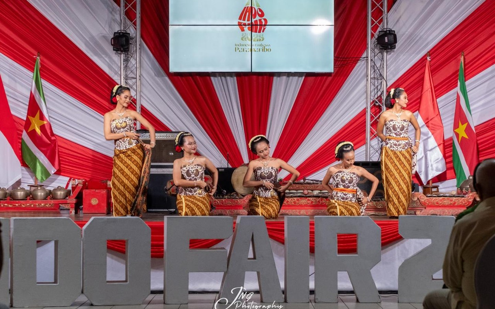
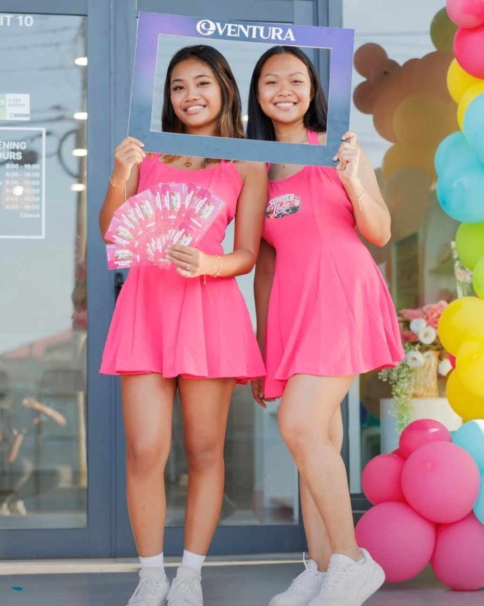
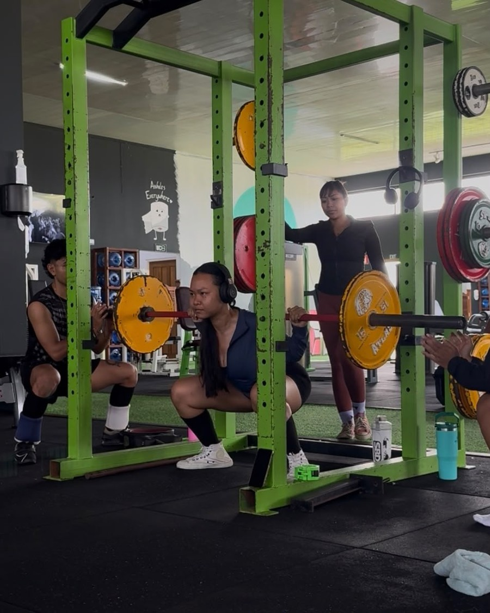
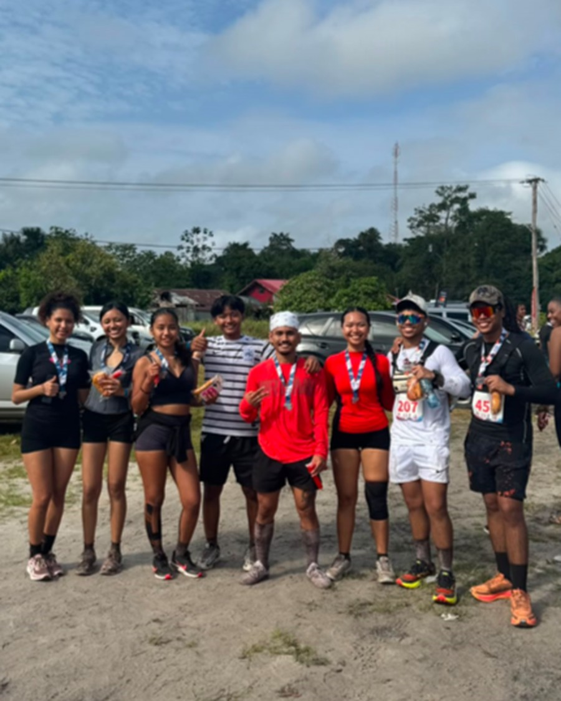
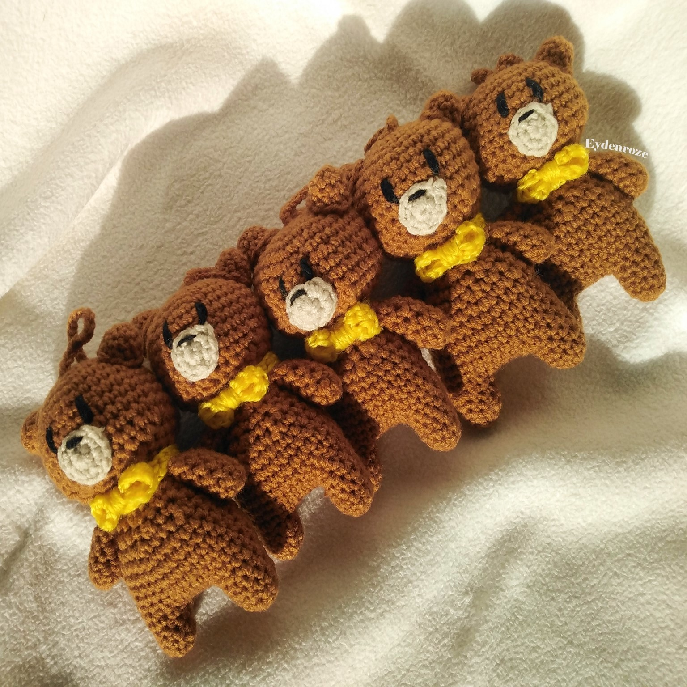
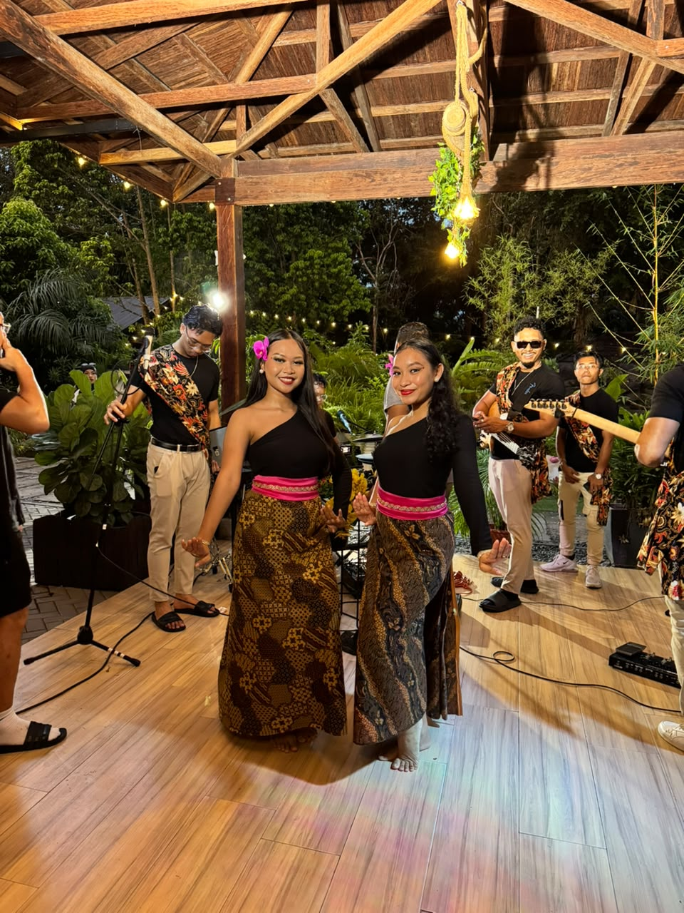
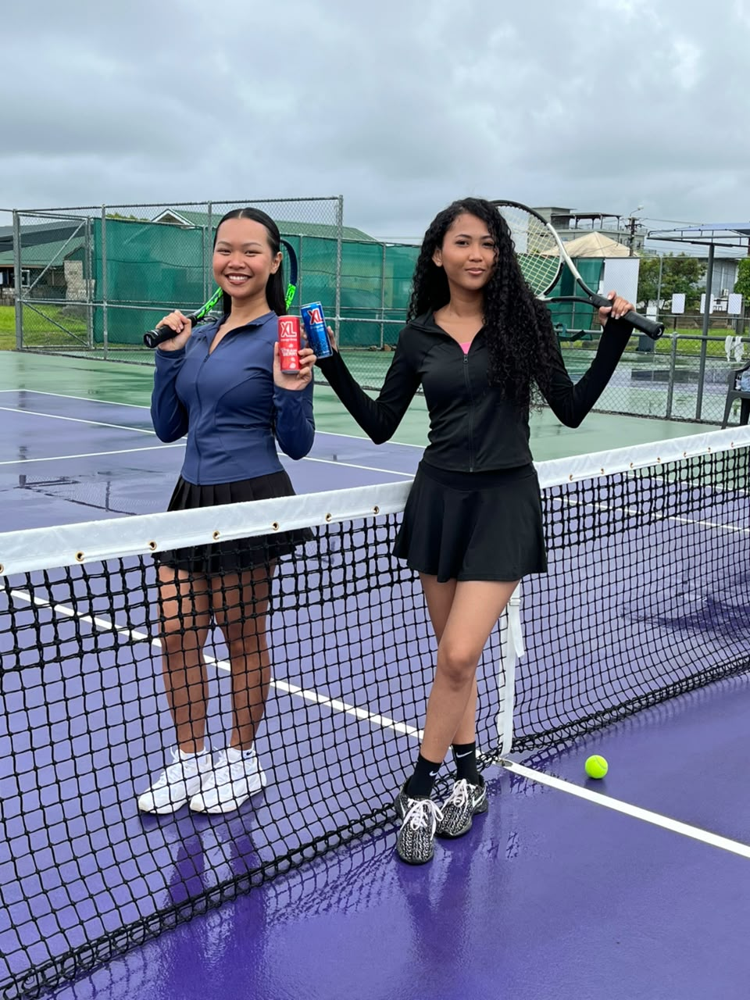
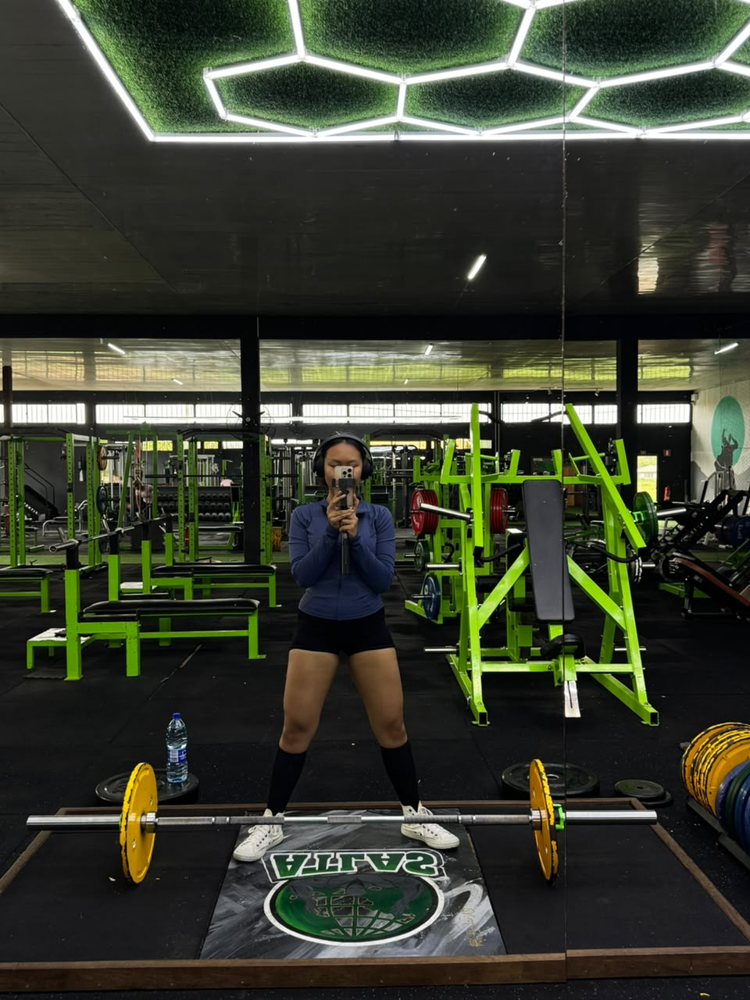
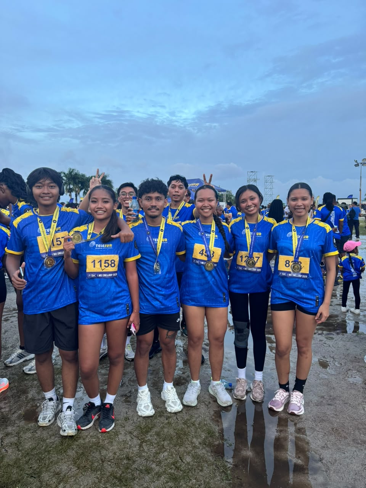
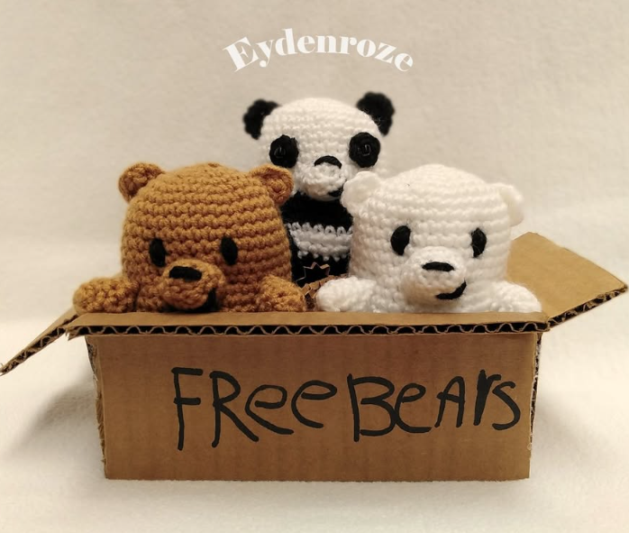

Lourdes, 21 jaar, Paramaribo
Lourdes, 21 jaar, uit Paramaribo. Outgoing en spontaan, altijd in voor een avontuur. In het dagelijks leven werk ik als promoter: fotoshoots, productpromoties, evenementen, noem maar op. Daarnaast blijf ik in beweging met gym, rennen, zwemmen, badminton, dans, etc. En als ik even tot rust kom? Dan pak ik mijn haaknaald; crochet is mijn moment van stilte. Tussendoor luister ik graag naar rock en metal en kan je me vaak in de scene vinden, leuke contrast met al dat dansen. Maar gek genoeg: ondanks al die drukte en sociale momenten, ben ik stiekem best introvert. Die drukte geeft me energie, maar de rust daarna heb ik net zo hard nodig.
Foto's
Een paar momenten van mijn verschillende POV's.










Dansen is waar ik ben opgegroeid
Dansen maakt al sinds mijn zesde deel uit van mijn leven, en het is onlosmakelijk verbonden met de cultuur waarin ik ben opgegroeid. Ik zet me actief in om die cultuur levend te houden — of het nu gaat om dans, muziek, kleding, eten of zang. Bij Sanggar Sinaring Surya en Line Dance Group Isthika doe ik kennisoverdracht, verzorg ik workshops en ondersteun ik het bestuur. Ook volg ik lessen bij de Indonesische Ambassade in Paramaribo, waar ik me verder verdiep in deze cultuur.
Software Engineering aan UNASAT
University of Applied Science and Technology (UNASAT). Tot nu toe heb ik onder andere Java, HTML, CSS en JavaScript geleerd, leren werken met verschillende databases, programmas en tools.